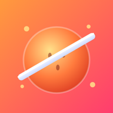

▶
Slice every fruit before the timer runs out!
About this game
One swipe, slice them all. Easy to play, hard to master.
开启后，新关卡上线、体力回满时推送提醒你回来玩

Slice every fruit before the timer runs out!
One swipe, slice them all. Easy to play, hard to master.
开启后，新关卡上线、体力回满时推送提醒你回来玩